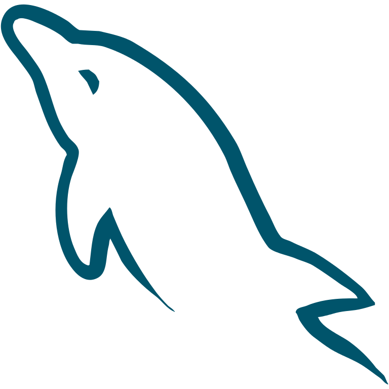

Welcome to my blog!
Graphic Design
Day 1
Today we talked about basic tools in Photoshop, such as how to draw shapes, colour them and how to write text and format it. The trainer also showed us how to set up a document for print. Later we started a small project to see how to use masking in photoshop. Masking is used to blend an image on another background.
Day 2
Today we covered how to select elements, clone parts of the image, how to cut an image from it’s background. How to take away parts of an image. We also covered editing tools like smudge and other tools to bring out more or take out light from a part of the picture. Finally we created a JPEG banner using effects and placing different images together.
Day 3
In day 3 of the class we covered an intro to Illustrator software. We practiced drawing basic shapes and modifying them. Illustrator is a software for working with vector shapes. It is useful for designing logos because vectors keep their quality even when they are stretched.
Day 4
In day 4 we covered Adobe's InDesign software, which is used to create document layouts. We learned to use the basic tools and designed a business card. InDesign seems like the most straightforward software of the three.
Web Design

Day 4
Today we started creating our own web design projects. Firstly we created a drawing of our web page for confirmation by our trainer Emiliano. Once the drawing was okay we started creating the files and coding the layout for our website. I decided to make a one page portfolio website that I could use later. I discovered that CSS is more tricky than it looks and as our trainer mentioned it helps to practice a lot. I am going to continue working on the project we started in class and also take a look at reproducing web pages or magazines layout in HTML/CSS.
I also learned about Flex-box to create layouts, going over the MDN documentation. It seems more handy than using floats for creating layouts.
We also did an introduction to JavaScript where we used JavaScript click event handlers to load image backgrounds for an image gallery. I look forward to using JS more in the future to create galleries and dynamic menus.
WordPress
Day 1
Today we had an introduction to WordPress CMS. We learned that there are two main WordPress systems: wordpress.com and wordpress.org. “.com” is easier for beginners but also more limited. Today we focused on .com. With our trainer Emiliano, we created a small website with different pages, a primary menu and a blog. We learned how to add videos with youtube, music with soundcloud and create a gallery. We also learned to place pictures in text and add links. I think WordPress is useful because it is easy to get a website up and running and looks pretty good out of the box. I’m looking forward to learn how to customise WordPress websites more tomorrow.
Day 2
Today we went over how to install a WordPress application on the control panel and manually. Then we saw how to install various plug-ins such as security plug ins and gallery. We talked about WordPress security and how to make the application more robust.
Intro to MySQL

Today we learned about MySQL(Structured Query Language), which is a system to create databases and manipulate data. We looked at how to create tables and extract information and how to create relationships between tables. I’m quite new to mySQL so I found it challenging as was lots of information to take in. We talked about LAMP stack which is Linux, Apache, Mysql and Php. We did an activity where we had to create a new database for a DVD store. I think I will need to go over the material again and do my own learning to better grasp the fundamentals of MySQL.
Email newsletter
Today we learned about Email coding using HTML and CSS. It is quite different to web page design because email clients can only read old HTML and CSS so we need to code with older HTML standards. For example, for layouts we should use tables. Also there is no recognition of ID for selecting CSS so we write inline CSS for design purposes. In class we coded a newsletter for the Training Dragon school.

Day 1 - Git and Github
Today we learned about Git and Github. We also had an overview of using the command line. It was quite comprehensive. We learned that using github we can work in teams on a same project. We can pull each other’s project and push to the main repository, which is where the project sits. Also it’s possible to create multiple branches and come back to earlier versions of the project.
Day 2 - node.js development tools
Today we learned about Node.js development tools such as Gulp, Node Package Manager and Yarn and saw how they can help to automate and speed up the development workflow. We saw how to install node.js, which is a runtime environment that can run JavaScript on the server. We installed Node Package Manager and installed dependencies such as Jquery and also a browser window, which automatically update itself: “browsersync”. Emiliano recommended that we start using these tools as soon as possible so that we can become used to working with them and also because they can greatly help our workflow.
Day 3 - Responsive web
Today we learned about mobile responsive design in other words how to style a website so that it works on multiple screens. It’s interesting that nowadays there are so many different screens available from large desktop computers to handheld phones and web sites and applications need to have a coherent format that works on each screen. There are many techniques to do that. We learned to use CSS grids to create responsive grids. Also there is a way of loading different pictures to fit different screens. The main technique to apply different CSS rules to different screens is to use media queries, which specify for which screen width specific CSS rules apply.
Day 4 - SASS
Today we learned about SASS which is a new way to write CSS. SASS code gets compiled into CSS. It seems more flexible than CSS because you can create variables and loops and other interesting techniques like mixins. CSS by itself can be a bit too repetitive but SASS looks like a programming language for CSS, which looks more powerful.
Day 5 - Bootstrap
Today we learned about Bootstrap and how to create interfaces with it. It seems quite straightforward to use and also quite useful and comprehensive.
Introduction to Programming
Today we had an introduction to programming concepts such as planning and designing the solution prior to writing code.
I thought that was useful because when you program sometimes the most difficult part is not writing the code but knowing exactly what steps to take to solve the problems. We also talked about splitting the problem into small parts.
JavaScript & jQuery

Day 1
Today we had an introduction to JavaScript and the DOM. With JavaScript you can animate HTML and CSS elements such as changing the CSS or the content with HTML. We learned some ES6 variables like const and let, different types of loops such as for loop, for while, and switch. We learned about arrays and objects. We learned that objects have properties and methods, which we can access and create.
Day 2
Today we talked about jQuery, which is a library for JS. It makes writing JS and selecting the DOM faster.
Advanced HTML5 and CSS3

Day 1
Introduction to HTML5 markup and Google maps API
Day 2
Today we talked about google maps api and we coded an application which shows our current location using the Google Maps API. We also had an introduction to using the canvas API. and drew squares using the API.
Day 3
Today we went more in depth into the canvas API to build a simple game. We also went through concepts of Object oriented programming and prototyping.
Day 4
Today we went through examples using the video API and also the canvas API. We also used CSS3 filters.